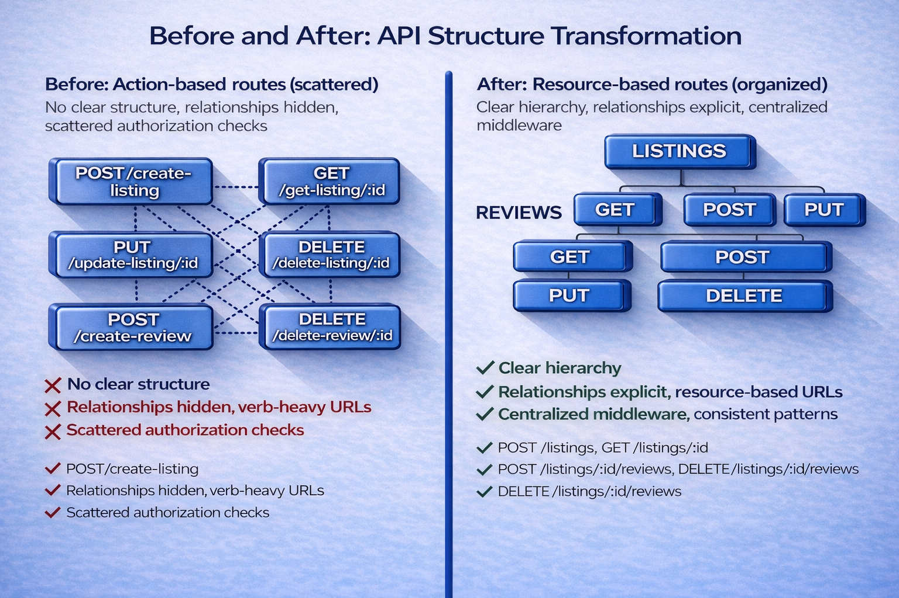

How Structured Thinking Transformed REST API Design
Harman Singh Sandhu | First-year BTech CSE at JIIT Noida | BS Data Science at IIT Madras
Executive Summary
While developing the backend for Ace Rentals, an architectural weakness was identified in how authorization was enforced. Authorization checks were duplicated across individual API routes, increasing maintenance overhead and introducing the risk of inconsistent access control as the system scaled.
The issue was structural rather than functional. Authorization relied on developers manually adding checks in each route instead of being enforced consistently by the architecture. This approach does not scale and increases fragility as the number of routes and features grows.
Given that the API was already in active use, a full redesign was not viable. The solution needed to operate within the existing Express framework, preserve current behavior, and focus narrowly on improving authorization structure.
To address this, authorization logic was centralized into middleware and routes were reorganized around resources. Ownership checks now execute consistently before any business logic, shifting access control from an implementation detail to an architectural guarantee.
This change eliminated duplicated logic, simplified route handlers, and made authorization predictable by default. A subsequent qualitative risk assessment confirmed that core business logic is stable, while remaining risks are primarily structural and related to shared authorization and setup. These insights will guide further architectural exploration, which will be evaluated and documented in a follow-up post.
Key takeaways: Problems that show up repeatedly in code are often design issues, not implementation mistakes. Rules like authorization that apply across many routes should be enforced in one shared place rather than copied everywhere. Good system design reduces the chance of human error and makes growth easier to manage.
Setting the Context: From Working Code to Structural Issues
Before diving into the redesign, it’s important to understand how the original structure evolved and why it became a problem.
While building Ace Rentals, a listings and reviews website, authorization logic evolved gradually alongside new features. As actions like deleting listings and reviews were added, it became necessary to ensure that users could only modify or remove resources they owned.
What started as simple ownership checks eventually exposed deeper design concerns. This article reflects on how applying structured thinking helped me move from scattered authorization logic to a centralized, middleware-based approach, improving clarity, maintainability, and confidence in the system as it grew.
Understanding the Problem: Scattered Authorization Logic
In the early iterations of the Ace Rentals API, authorization checks were implemented directly within route handlers. Each route was responsible for independently verifying whether a user was authenticated and whether they owned the target resource.
While this approach worked functionally, it resulted in repeated authorization logic scattered across the codebase. Any route that allowed deletion or modification had to manually include the same ownership check, increasing the risk of inconsistency and oversight as the system evolved.
The turning point came when I added a new endpoint and realized — almost as an afterthought — that I needed to repeat the same ownership check yet again. For a moment, it wasn’t clear whether I had already enforced it elsewhere or had simply assumed it was covered. Nothing broke, but that uncertainty itself was the problem. The system still worked, yet it was becoming increasingly difficult to trust.
At this point, I had to work within a few clear constraints. The API was already functional, so the solution needed to avoid breaking existing routes or changing how clients interacted with the system. Rewriting large parts of the application or introducing additional services would have added complexity without solving the underlying problem. Given these constraints, the focus was on improving how authorization rules were structured within the existing Express setup rather than redesigning the system entirely.
Observing the Problem in Code
A closer examination of the code structure reveals that both deletion routes perform identical ownership verification logic: the resource is fetched, the creator’s identifier is compared against the logged-in user’s identifier, a forbidden response is returned if the check fails, and execution proceeds only if authorization succeeds.
// Delete Listing Route
router.delete('/listings/:id', (req, res) => {
Listing.findById(req.params.id, (err, listing) => {
// ⚠️ SECURITY CHECK - Must be manually added to every route
if (listing.creator.toString() !== req.user._id.toString()) {
return res.status(403).send("Unauthorized");
}
// ⚠️ Problem: If I forget this check, users can delete ANY listing
listing.deleteOne();
res.redirect('/listings');
});
});
// Delete Review Route - IDENTICAL LOGIC (Copy-Pasted Security Check)
router.delete('/reviews/:id', (req, res) => {
Review.findById(req.params.id, (err, review) => {
// ⚠️ SAME SECURITY CHECK - Duplicated code, different variable names
if (review.author.toString() !== req.user._id.toString()) {
return res.status(403).send("Unauthorized");
}
// ⚠️ Problem: If I forget this check, users can delete ANY review
review.deleteOne();
res.redirect('/');
});
});
Although the routes operate on different resources, the authorization logic is effectively the same. The only variation lies in the property names (listing.creator versus review.author). This pattern led to authorization checks being duplicated across multiple routes, requiring developers to remember to re-implement the same logic each time a new endpoint was added.
The risk was subtle but significant: forgetting this check even once could allow a user to delete a resource they did not own, introducing a potential security vulnerability.
Another observed challenge was that someone examining the code structure might not readily discern that reviews belong to listings. That relationship existed primarily in the database schema; the API structure did not explicitly reveal it.
Structural Limitations in the API Design
Another limitation emerged from the API structure itself. From the routing design alone, it was not immediately clear that reviews belonged to listings. This relationship was primarily expressed at the database level rather than being reflected explicitly in the API’s URL structure, reducing the self-documenting nature of the interface.
Identified Issues
Based on these observations, two core issues were identified:
- Duplicated authorization logic, increasing maintenance effort and the likelihood of inconsistent updates.
- Non-systematic authorization coverage, where security relied on manual repetition rather than structural enforcement, increasing the risk of missed checks.
To make the scattered nature of my authorization logic more apparent, refer to the visual representation below:
Diagnosing the Complexity of Scattered Authorization
Observation (Figure 1): The diagram highlights a recurring pattern of scattered authorization checks, where individual routes independently implement similar ownership verification logic. This results in duplicated security checks across the codebase and reflects a lack of centralized enforcement.
Impact: When authorization logic is duplicated, changes to security requirements must be applied in multiple places. As the number of routes grows, this increases maintenance overhead and raises the risk of inconsistent enforcement, where some endpoints may be updated while others are missed.
Solution Path: This duplication pattern indicated the need for a systematic restructuring of authorization—moving from route-by-route checks to a centralized, reusable mechanism that could be applied consistently across the entire API.
Key Learning: Repetition in code could be a probable signal that something is structurally wrong. When one solves the same problem multiple times, it may be time to rethink the design approach.
Finding the Root Cause: Structured Problem-Solving
Diagnosing Structural Gaps Using MECE Analysis
I recognized that my approach lacked consistency. Routes were being named around actions rather than organized around resources, which led to fragmented structure and repeated logic. To address this, I applied a framework I learned after graduating from the McKinsey Forward Program: MECE (Mutually Exclusive, Collectively Exhaustive) thinking.
Viewed through this lens, the authorization issue became clear. The logic was not mutually exclusive, as the same ownership checks were duplicated across multiple routes. It was also not collectively exhaustive, because there was no systematic mechanism to guarantee that every route was protected.
As a result, each new feature introduced unnecessary risk—every change relied on manual discipline and the assumption that no security check would be overlooked. This lack of structural enforcement made the system fragile and difficult to scale
To clarify the structural issues, the MECE analysis below visually highlights the flaws in the overall design:

Identifying Structural Gaps Through MECE Analysis
Observation (Figure 2): Applying MECE analysis to the authorization logic revealed that the existing approach was neither mutually exclusive nor collectively exhaustive. Authorization checks were repeated across routes without clear boundaries, and there was no single mechanism ensuring complete coverage across all protected endpoints.
Impact: Because authorization logic did not follow a MECE structure, the system relied on developer discipline rather than architectural guarantees. This increased the likelihood of overlap, gaps, and inconsistencies, especially as new routes were introduced or existing ones were modified.
Insight: The MECE diagnosis reframed the problem from a coding issue to a structural one. It highlighted that authorization needed to be treated as a cross-cutting concern and handled centrally, rather than being embedded piecemeal within individual routes.
Evaluating Architectural Options with a Prioritization Matrix
The MECE analysis revealed what was wrong with my approach, but I still had multiple potential solutions. I needed a structured way to choose the best long-term design. I used the Prioritization Matrix to evaluate each approach against key criteria and identify the optimal solution.
Each option was evaluated using two primary criteria: code reusability and long-term maintainability.
To evaluate possible solutions, I referred to the following prioritization matrix to clearly compare their respective strengths and weaknesses:

Selecting the Optimal Authorization Strategy
Observation (Figure 3): Multiple architectural options were considered to address the authorization problem, ranging from continuing route-level checks to introducing shared helper functions or centralized middleware. The prioritization matrix evaluated these options across key dimensions such as maintainability and reusability.
Impact: Without a structured comparison, selecting an approach would have relied on intuition rather than evidence. The matrix made the trade-offs explicit, showing that solutions which duplicated logic across routes scored poorly on both maintainability and long-term scalability.
Decision: The analysis clearly favored centralized middleware as the optimal solution. It offered high reusability, reduced duplication, and a single enforcement point, making it the most robust and maintainable approach as the API continued to grow.
Breaking down each option, the table below summarizes how each architectural approach performs across the two evaluation criteria, along with the key trade-offs involved.
| Architecture Approach | Code Reusability | Maintainability | Key Trade-offs |
|---|---|---|---|
| Action-Based + Scattered | Low | Low | High burden, easy to miss, no reuse |
| Action-Based + Centralized | Low | High | Better maintenance, but verb-heavy |
| Resource-Based + Scattered | High | Low | Clean URLs, but inconsistent security |
| Resource-Based + Centralized | High | High | ✅ Clean URLs, reusable, consistent |
The prioritization matrix made the path forward clear. Of the four quadrants analyzed, only resource-based routes with centralized middleware delivered both high code reusability and high maintainability. This analysis eliminated guesswork—the data pointed to one optimal solution. Now I needed to transform this strategic choice into actionable implementation steps.
Translating Analysis into Executable Goals
After identifying the root cause and selecting the architectural direction, the remaining challenge was execution. I realized that without clear boundaries, even a well-reasoned refactor could easily expand beyond its original intent. Defining SMART goals helped me translate analysis into disciplined action and, more importantly, taught me how to control scope during implementation.
| SMART Criteria | Implementation Target | Implementation Necessity | Status |
|---|---|---|---|
| Specific | Centralize authorization into a single middleware | A single control point was necessary to avoid relying on memory when adding or modifying routes | ✅ |
| Measurable | Remove duplicated ownership checks from all protected routes | Provided a concrete way to verify that the refactor actually reduced authorization risk | ✅ |
| Achievable | Use existing Express middleware patterns | Kept the solution practical and understandable without introducing unnecessary complexity | ✅ |
| Relevant | Improve security and reduce authorization-related bugs | Directly addressed the core issue identified during earlier analysis | ✅ |
| Time-Bound | Complete the refactor within two weeks | Prevented scope creep and enforced focused, incremental changes | ✅ |
What I learned through this step was that SMART goals are less about planning and more about restraint. Explicitly stating why each constraint existed made it easier to stay focused during implementation and avoid turning a targeted refactor into a broader redesign.
How Frameworks Work Together
MECE (Diagnose) → Prioritization matrix (Evaluate) → SMART (Plan) → DRY (Execute)
This pipeline may help transform vague problems into more systematic approaches. One possible workflow: diagnose probable issues, evaluate options, plan with measurable goals, execute with clean code principles, and work toward results that could scale.
Implementation Impact
This implementation transformed authorization from a repeated, route-level responsibility into a centralized, system-level guarantee. Previously, authorization checks were embedded directly within individual route handlers, requiring manual enforcement in every endpoint. Guided by MECE analysis to identify authorization as a cross-cutting concern, validated through a prioritization matrix as the most maintainable approach, and executed using SMART goals, the refactor consolidated ownership checks into dedicated middleware applied consistently across protected Express routes. Middleware was the appropriate abstraction because authorization is orthogonal to business logic and must execute before any state-changing operation. As a result, duplicated logic was eliminated, the risk of inconsistent or missing authorization enforcement was reduced, route handlers remained focused on business logic, and the system became easier to extend, safer to modify, and more predictable as the codebase scales. This implementation also reinforced the importance of addressing structural problems before writing code, demonstrating how upfront architectural decisions can reduce long-term complexity more effectively than incremental fixes.
The Redesign: Action-Based to Resource-Based
The restructured approach allows HTTP methods to carry the action while URLs carry the resource. On perusal of the table below, one can observe how this structure potentially makes the API more predictable and self-documenting.
| Operation | Before (Action-Oriented Endpoints) | After (RESTful Resources) | Why This Matters |
|---|---|---|---|
| Create listing | POST /create-listing | POST /listings | HTTP method implies action |
| View listing | GET /get-listing/:id | GET /listings/:id | Cleaner, standard |
| Update | PUT /update-listing/:id | PUT /listings/:id | Resource-scoped |
| Delete listing | DELETE /delete-listing/:id | DELETE /listings/:id | Consistent |
| Create review | POST /create-review | POST /listings/:id/reviews | Shows ownership |
| Delete review | DELETE /delete-review/:id | DELETE /listings/:id/reviews/:rid | Clear hierarchy |
The diagram below illustrates the transition from route-level authorization checks to a centralized middleware approach:

Centralizing Authorization Through Middleware
Observation (Figure 4): The implementation moved authorization logic out of individual route handlers and into dedicated middleware that executes early in the request lifecycle. This ensured that ownership validation occurs before any business logic or state-changing operation is performed.
Impact: By centralizing authorization, duplicated checks across routes were eliminated and enforcement became consistent by default. Route handlers were simplified and focused solely on domain behavior, reducing cognitive load and making the codebase easier to maintain and extend
Outcome: This architectural shift transformed authorization into a system-level guarantee. New routes automatically inherit authorization rules, reducing the risk of security regressions as features are added and the application scales.
Building the Solution: Centralized Authorization
Instead of writing the ownership check in every route, I created one reusable middleware function. This function encapsulates all the authorization logic in a single place. It uses Express's middleware pattern where next() passes control to the next handler only if authorization succeeds:
const isOwner = async (req, res, next) => {
const listing = await Listing.findById(req.params.id);
if (!listing.author.equals(req.user._id)) {
req.flash('error', 'You cannot modify this listing');
return res.redirect('/listings');
}
next();
};
This middleware is intentionally single-purpose: it verifies whether the current user owns the listing. The listing.author.equals() method safely compares MongoDB ObjectIds to avoid false matches. If the check fails, an error is flashed and the request is stopped before any data is modified. If it passes, next() forwards the request to the route handler.
Then I applied this single middleware to all protected routes, chaining it with authentication:
router.put('/:id', isLoggedIn, isOwner, updateListing);
router.delete('/:id', isLoggedIn, isOwner, deleteListing);
router.delete('/:id/reviews/:rid', isLoggedIn, isOwner, deleteReview);
Read these routes from left to right—they form a pipeline. First isLoggedIn verifies the user has a valid session, then isOwner verifies ownership, and finally the business logic executes. The transformation is profound: the authorization check exists in exactly one place. If I need to add logging, change the error message, or modify the authorization logic, I change it once and it applies everywhere. New features automatically inherit the same security pattern—no chance of forgetting.
While the middleware code itself is straightforward, understanding how requests flow through this pipeline reveals the true power of this architectural pattern. The sequential execution of authentication, authorization, and business logic creates a clear separation of concerns that makes the system both more secure and more maintainable.
The following visual summarizes the measurable improvements in consistency, maintainability, and scalability after implementing centralized authorization:
Demonstrating the Impact of the Architectural Change
Observation (Figure 5): After centralizing authorization, the system exhibited clearer separation of concerns and more predictable behavior across protected routes. Authorization enforcement became uniform, independent of the number of endpoints or features added.
Impact: The refactor reduced code duplication, lowered maintenance overhead, and minimized the risk of inconsistent security enforcement. Changes to authorization rules now require updates in a single location, improving reliability and reducing the likelihood of regression.
Result: By transforming authorization into an architectural control rather than a repeated implementation detail, the system became easier to reason about, safer to evolve, and better positioned to scale without increasing complexity.
Impact: Authorization moves from repeated checks inside handlers to one reusable middleware. Route handlers shrink to just a few lines and focus only on business logic. Security becomes consistent, scalable, and impossible to forget.
Measuring the Impact of the Transformation
The middleware pattern sounds elegant in theory, but what concrete improvements does it deliver in practice? Moving from scattered authorization checks to centralized middleware led to clear, observable changes across the codebase—from how many places required review to how confident it felt to add new features. The table below summarizes what shifted and why it mattered.
| Design Aspect | Before Refactoring | After Refactoring |
|---|---|---|
| Route naming | Verb-heavy URLs | Resource-based URLs |
| Authorization | Repeated everywhere | Centralized middleware |
| Relationships | Hidden in database | Explicit in structure |
| New features | Manual security check each time | Automatic inheritance |
| Consistency | Easy to miss | Enforced by design |
| Maintenance | Update many files | Update once |
Key Transformation: Authorization was moved out of individual route handlers and into a single middleware. This eliminated repeated security checks and ensured that every protected route is evaluated consistently. In parallel, the API was restructured so that URL paths clearly express how resources relate to one another, rather than relying on implicit database relationships. Together, these changes show how structured thinking was translated into a concrete, enforceable design in code.
Risk Assessment
Following the measurement of the architectural transformation in my personal project, Ace Rentals, I evaluated the current design to understand not only what improved, but also where risk remains concentrated. The intent is to make architectural trade-offs explicit and use them as a structured learning aid for future design decisions.
The current approach centralizes authorization to improve consistency and reduce duplication. While this has simplified implementation, it also concentrates responsibility into shared logic and introduces specific structural risks worth examining.
| Risk Area | Logic Type | L | I | Risk Score (L × I) | Notes |
|---|---|---|---|---|---|
| Business rules incorrect or unstable | Business logic | 0 | 0 | 0 | Core domain logic is stable |
| Domain invariants violated | Business logic | 0 | 0 | 0 | No business-rule risk observed |
| Centralized authorization failure | Shared authorization logic | 2 | 3 | 6 | High impact due to centralized control |
| Overgeneralized authorization logic | Shared authorization logic | 3 | 2 | 6 | Likely complexity as system grows |
| Missing middleware on new routes | Setup / configuration logic | 1 | 3 | 3 | Rare but high-impact edge case |
| Request structure dependency | Technical infrastructure logic | 1 | 2 | 2 | Low-frequency coupling risk |
| Debugging complexity | Operational logic | 2 | 1 | 2 | Manageable operational overhead |
| TOTAL RISK SCORE | — | — | — | 19 | Project Grade: B |
Scoring Reference (Applied Above)
| Likelihood (L) | Impact (I) | Project Grade |
|---|---|---|
| 0 = No observed risk | 0 = No impact | A = 0–10 (Low-risk, well-contained) |
| 1 = Rare / edge-case | 1 = Limited, easy recovery | B = 11–20 (Moderate, manageable architectural risk) |
| 2 = Possible during normal development | 2 = Partial system impact | C = 21–30 (Elevated structural risk) |
| 3 = Likely as system evolves | 3 = Broad impact (including security or data) | D > 30 (Fragile design) |
Reflection and Forward Direction
This assessment shows that no risk currently originates from business logic. All identified risks are structural in nature, primarily related to how authorization, setup, and shared responsibilities are handled.
As part of my continued learning, I will study alternative architectural approaches—such as modular monolith, layered architecture, domain-driven modularization, and policy-based authorization—and evaluate how each redistributes the current risk profile. I plan to refactor Ace Rentals using the selected approach and share the resulting learnings and trade-offs in a follow-up blog.
Key Insight: All identified risk in Ace Rentals resides in shared and structural logic rather than business logic, indicating that future improvements should focus on architectural structure rather than domain behavior.
Reflecting on the Journey
This refactor wasn’t triggered by a bug or a performance issue. It came from a growing feeling that the system was becoming harder to work with as it changed. When authorization logic was repeated across multiple routes, I had to rely on memory to ensure correctness, which made the design feel fragile over time.
Moving authorization into a centralized middleware didn’t just reduce duplication—it made the rules of the system easier to see and reason about. Once those rules lived in a single place, adding or modifying features felt more predictable and less error-prone.
As a student, the main lesson for me is that design problems often appear before anything actually breaks. Repeated logic, uncertainty, and small moments of hesitation can signal deeper structural issues. Learning to notice and act on these signals early has been an important step in how I now think about backend design.
Key Learnings
- Design around resources, not actions: Resource-based routes create predictable APIs and make authorization boundaries easier to reason about than action-based endpoints.
- Use structure before writing code: Applying MECE, prioritization matrices, and SMART goals early helped surface structural issues upfront and reduced rework later.
- Centralization requires intent: Shared middleware improves consistency and reduces duplication, but it also concentrates responsibility and must be designed deliberately.
- Make security structural: Enforcing authorization through the request pipeline is more reliable than relying on developers to remember checks.
- Clear structure exposes risk: Explicit route relationships (such as nested resources) improve domain clarity and make authorization scope and residual risk easier to identify.
About the Author
Harman Singh Sandhu is a first-year student pursuing a BTech in Computer Science at JIIT Noida alongside a BS in Data Science at IIT Madras. An alumnus of the McKinsey Forward Program, his learning approach emphasizes structured thinking, strong engineering fundamentals, and data-driven problem-solving. As a student developer, his interests center on understanding systems end-to-end, building practical product-oriented applications, and learning through real-world projects. He is particularly interested in open-source contribution, collaborative development, and writing clean, maintainable code that scales beyond academic settings.
LinkedIn: https://www.linkedin.com/in/harman-sandhu-713852367
Email: harman2504sandhu@gmail.com
Project: Ace Rentals (GitHub: https://github.com/Ace-2504/Ace-Rentals)
Disclaimer
This article was developed with AI assistance strictly for language refinement, structural organization, and visual presentation. All technical concepts, problem definitions, implementation choices, architectural decisions, and trade-off analyses are based on the author’s own learning and hands-on development experience while building Ace Rentals.